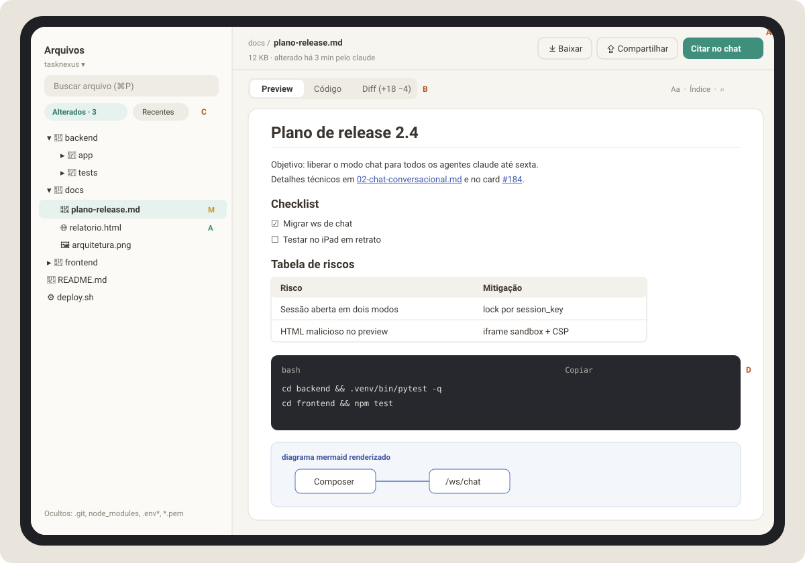
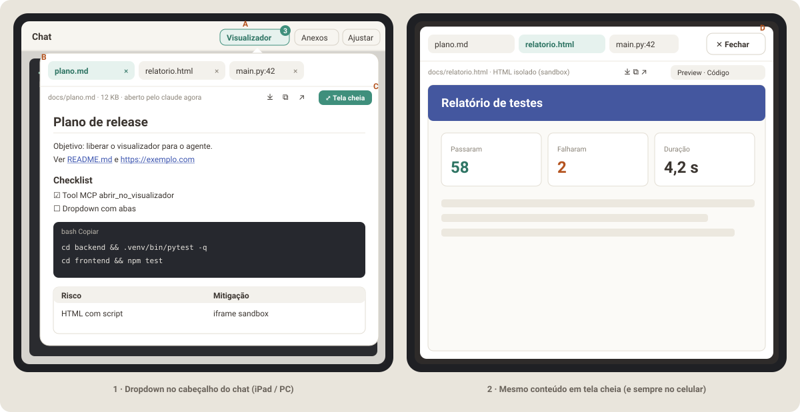
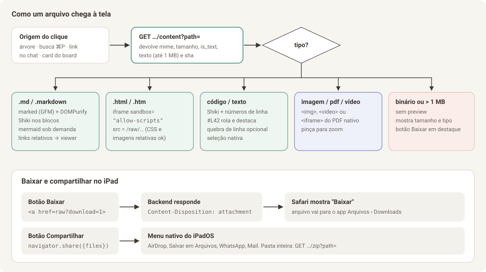

Parte 1 de 8
Parte 1 — Visualizador de arquivos (ver, navegar e baixar pelo tablet)
Objetivo: com o TaskNexus rodando no PC, abrir no iPad qualquer arquivo dos projetos (
.md,.html, código, imagens, PDF), ler com conforto, copiar trechos e baixar ou compartilhar o arquivo para o próprio tablet.Pré-requisito obrigatório: autenticação (Parte 4, item 4.1). Sem ela, esta API expõe arquivos do seu PC para qualquer aparelho da rede.
Atualização: esta parte virou a segunda etapa do visualizador. A primeira é a Fase V (seção 1.0 e Parte 6): o próprio agente abre o arquivo na tela, porque hoje não dá para clicar em links no terminal.

Legenda do mockup: A ações do arquivo (baixar, compartilhar, citar no chat) · B abas Preview / Código / Diff · C filtros "Alterados" (git) e "Recentes" · D bloco de código com botão Copiar.
1.0 Primeira entrega: o agente abre o arquivo na tela (Fase V)
Hoje o chat é um terminal e os links não são clicáveis. Por isso, antes da árvore de pastas e da busca, vem uma entrega menor e mais urgente:
- O agente mostra o arquivo: uma ferramenta MCP nova,
abrir_no_visualizador(caminho, titulo?, linha?), registrada para oclaudee ocodexdo mesmo jeito que as ferramentas de card e tarefa. A descrição da ferramenta orienta o agente a usá-la sempre que criar ou alterar um arquivo que você deva ver. - Cada abertura é uma aba nova num visualizador em dropdown, que fica no cabeçalho do chat, ao lado de "Anexos". O mesmo arquivo pedido de novo reaproveita a aba e recarrega o conteúdo.
- Botão Tela cheia: o dropdown vira um modal de tela cheia na página, com as mesmas abas e um botão ✕ Fechar. No celular abre sempre em tela cheia.
- Aviso ao vivo pelo WebSocket do terminal que já está aberto (frame de
controle
viewer_open). As abas ficam salvas no banco, então nada se perde se a tela estiver fechada. - Baixar, copiar e abrir no navegador em cada aba. Markdown como no GitHub,
HTML isolado em
iframesandbox e código com destaque de sintaxe. - Bônus: links
https://e caminhos de arquivo no terminal ficam clicáveis (addon de links do xterm) e abrem no visualizador.

O plano completo, com contratos, arquivos, testes e aceite, está na
Parte 6 — Planejamento da Fase V. O código dessa
fase (file_access.py, renderers, DiffRenderer futuro) é reaproveitado pelo
restante desta Parte 1.
1.1 Histórias de uso (UX)
| # | Como… | Quero… | Para… |
|---|---|---|---|
| H1 | usuário no iPad | tocar num caminho de arquivo citado pelo agente no chat | ver o arquivo sem sair da conversa |
| H2 | usuário no iPad | navegar pelas pastas do projeto e buscar por nome | achar um arquivo que não foi citado |
| H3 | usuário revisando o trabalho do agente | ver só os arquivos alterados e o diff | revisar o que mudou antes de aprovar |
| H4 | usuário | ver um .md renderizado como no GitHub (tabelas, checklists, código, mermaid) |
ler documentação e planos |
| H5 | usuário | ver um .html renderizado de verdade, com o CSS dele |
conferir relatórios e protótipos gerados pelo agente |
| H6 | usuário | baixar o arquivo ou mandar por AirDrop / WhatsApp / Arquivos | usar o arquivo fora do TaskNexus |
| H7 | usuário | selecionar e copiar um trecho com o toque nativo | colar em outro app |
| H8 | usuário | "citar no chat" um arquivo ou trecho | pedir ao agente para mexer exatamente ali |
Fluxos principais
- Do chat para o arquivo (H1): toque no link
backend/app/main.py:42→ abre o painel de contexto (iPad deitado), um slide-over (iPad em pé) ou uma tela nova (celular) → rola até a linha 42 e a destaca por 2 s → botão "voltar" ou gesto de arrastar para a direita fecha. - Navegar (H2): aba Arquivos → escolhe o projeto (padrão: o projeto da conversa ativa) → árvore carregada por pasta, sob demanda → toque no arquivo abre o viewer.
- Buscar (H2):
⌘Pno teclado físico, ou o campo de busca → busca aproximada por nome (estilo VS Code) → Enter/toque abre. - Revisar (H3): chip "Alterados · N" → lista do
git status→ toque abre direto na aba Diff. - Baixar (H6): botão Baixar → Safari mostra o aviso de download → arquivo cai em Arquivos › Downloads. Botão Compartilhar → folha de compartilhamento do iPadOS.
Estados que precisam existir
| Estado | O que mostrar |
|---|---|
| Carregando | esqueleto do documento (3–4 barras cinza), nunca spinner no meio da tela |
| Arquivo grande (> 1 MB) | "Arquivo grande (4,3 MB). O preview foi desativado para não travar o tablet." + botões Baixar e "Mostrar as primeiras 2.000 linhas" |
| Binário sem preview | ícone do tipo, nome, tamanho, data, botão Baixar em destaque |
| Arquivo bloqueado (denylist) | "Este arquivo está protegido (segredos e chaves não são exibidos pelo TaskNexus)." |
| Não encontrado / apagado | "O arquivo não existe mais. Ele pode ter sido movido pelo agente." + botão "Buscar pelo nome" |
| Sem permissão de leitura no disco | mensagem do sistema operacional traduzida + caminho |
| Arquivo mudou enquanto aberto | faixa discreta no topo: "Arquivo alterado agora · Recarregar" |
1.2 Design
- Estrutura: o viewer é um componente único (
FileViewer) usado em três lugares: tela Arquivos, painel de contexto ao lado do chat e folha em tela cheia no celular. Mesmo componente, contêiner diferente. - Cabeçalho do arquivo: breadcrumb (
docs / plano-release.md), linha de metadados (tamanho, "alterado há 3 min", autor quando vier do agente) e ações à direita. No celular, as ações viram ícones com rótulo acessível. - Abas: controle segmentado
Preview | Código | Diff, 36 px de altura, mesmo estilo do seletor Chat/Terminal (Parte 3). A aba Diff só aparece quando o arquivo tem alteração no git. - Tipografia de leitura: corpo em Figtree 16 px / 1,6 no tablet
(15 px no celular), coluna de no máximo 76 caracteres; código em IBM Plex
Mono 13,5 px. Controle "Aa" com 3 tamanhos (salvo em
localStorage). - Markdown: visual de referência é o GitHub: títulos com linha inferior
em H1/H2, tabelas com cabeçalho preenchido e rolagem horizontal própria,
checklists com caixas reais (somente leitura), citações com barra lateral
de 3 px na cor
--v2-border, blocos de código escuros em ambos os temas. - Blocos de código: cabeçalho com linguagem + nome do arquivo quando houver, botões Copiar e Quebrar linhas. Números de linha na aba Código, não no Preview.
- Árvore: linhas de 40 px (alvo de toque), indentação de 16 px por nível,
ícone por tipo, letra de status git à direita (
Mamarelo,Averde,Dvermelho,?cinza). Pastas ocultas por padrão com opção "Mostrar ocultos". - Cores: apenas tokens
--v2-*existentes. Diff usa--v2-accent-softpara linhas adicionadas e--v2-danger-softpara removidas.
1.3 Arquitetura (TL)

1.3.1 Por que um "token de projeto" na URL
O project_id pode conter / (projetos aninhados, ex.: podesubir/teste).
As rotas de anexos já usam {project_id:path}, o que funciona quando o
sufixo é fixo. Para arquivos, precisamos de dois caminhos na mesma URL
(o do projeto e o do arquivo), e a rota raw precisa que links relativos
dentro de um HTML funcionem (<link href="style.css"> tem que resolver para
o arquivo vizinho). Solução:
project_token = base64url(project_id) (sem padding "=")
/api/fs/{project_token}/raw/{file_path:path}
Assim, um HTML em /api/fs/cG9kZXN1Ymly/raw/docs/relatorio.html que pede
style.css faz o navegador buscar /api/fs/cG9kZXN1Ymly/raw/docs/style.css,
que é exatamente o arquivo vizinho.
1.3.2 Endpoints novos
Todos exigem autenticação (4.1) e resolvem o projeto com a mesma lógica de
_resolve_project_or_404.
| Método e rota | Para quê | Resposta |
|---|---|---|
GET /api/fs/{token}/tree?path=docs |
lista uma pasta (lazy) | {"path":"docs","entries":[{"name":"plano.md","type":"file","size":12034,"mtime":1727290000.1,"git":"M"}], "truncated":false} |
GET /api/fs/{token}/content?path=docs/plano.md |
metadados + texto para preview | {"path","size","mtime","mime","kind":"markdown|html|code|image|pdf|video|binary","language":"python","is_text":true,"text":"…","truncated":false,"sha256":"…"} |
GET /api/fs/{token}/raw/{file_path} |
bytes do arquivo (preview de HTML, imagem, PDF) | FileResponse com Content-Type correto e cabeçalhos de segurança (1.4) |
GET /api/fs/{token}/raw/{file_path}?download=1 |
download | igual acima + Content-Disposition: attachment; filename*=UTF-8''nome.ext |
GET /api/fs/{token}/zip?path=docs |
baixar pasta | StreamingResponse de um zip gerado em streaming, com limite de 200 MB |
GET /api/fs/{token}/search?q=plano&limit=50 |
busca por nome | {"results":[{"path":"docs/plano-release.md","score":0.92}]} |
GET /api/fs/{token}/git/status |
arquivos alterados | {"is_repo":true,"branch":"main","files":[{"path":"docs/plano.md","status":"M","added":18,"removed":4}]} |
GET /api/fs/{token}/git/diff?path=docs/plano.md |
diff unificado de um arquivo | {"path","diff":"@@ -1,4 +1,6 @@…","binary":false} |
GET /api/fs/{token}/events (opcional, fase 2) |
aviso de "arquivo mudou" | Server-Sent Events com {"path","mtime"} |
Regras de implementação:
tree: ordena pastas primeiro, depois arquivos, ambos por nome sem diferenciar maiúsculas. Máximo de 2.000 entradas por pasta (truncated:trueacima disso). Pastas ignoradas por padrão:.git,node_modules,__pycache__,.venv*,dist,build,.next,.pytest_cache,.escritorio. Parâmetroshow_hidden=1mostra pontos-arquivos, nunca os da denylist.content: lê no máximo 1 MB. Detecta texto lendo os primeiros 8 KB (sem byte\x00e decodificável como UTF-8, com fallback latin-1).kindvem da extensão,languagede um mapa extensão → id do Shiki (.py→python,.jsx→jsx,.ps1→powershell,Dockerfile→docker…).search: serg(ripgrep) estiver no PATH, usarg --files(respeita.gitignore, muito rápido); senão,os.walkcom as mesmas exclusões. Pontuação por subsequência (estilo fuzzy do VS Code) feita em Python. Cache por projeto de 30 s.git/*:git -C <projeto> status --porcelain=v1 -zegit diff --numstat/git diff -- <arquivo>viaasyncio.create_subprocess_exec(nuncashell=True), timeout de 5 s. Arquivos não rastreados (??) mostram o conteúdo inteiro como adição.- Tudo que toca disco roda em thread (
asyncio.to_thread) para não travar o loop que também atende os WebSockets.
1.3.3 Onde colocar o código
Não aumente o main.py. Crie:
backend/app/files_api.py # APIRouter com as rotas acima
backend/app/file_access.py # resolve_safe_path, denylist, detecção de tipo
backend/app/git_info.py # status e diff via subprocess
backend/tests/test_file_access.py
backend/tests/test_files_api.py
e registre com app.include_router(files_router) no main.py.
1.4 Segurança (TL) — leia com atenção
1.4.1 Contenção de caminho
Função única, usada por todas as rotas:
def resolve_safe_path(project_root: str, rel_path: str) -> str:
"""Devolve o caminho absoluto real ou levanta PermissionError/FileNotFoundError."""
if "\x00" in rel_path or "\\" in rel_path:
raise PermissionError("caractere inválido")
candidate = os.path.realpath(os.path.join(project_root, rel_path.lstrip("/")))
root = os.path.realpath(project_root)
if os.path.commonpath([root, candidate]) != root:
raise PermissionError("fora do projeto")
if is_denied(os.path.relpath(candidate, root)):
raise PermissionError("arquivo protegido")
return candidate
realpathresolve links simbólicos: um symlink dentro do projeto que aponte para~/.sshé recusado porque o destino real fica fora da raiz.- A lógica é a mesma de
_is_within_directoryemattachments.py; reaproveite ou extraia para um util comum, sem duplicar. - O middleware
RejectBackslashPathMiddlewarejá existente continua valendo.
1.4.2 Denylist (nunca exibir nem baixar)
.env, .env.* (exceto .env.example), *.pem, *.key, *.p12, *.pfx,
id_rsa*, id_ed25519*, *.kdbx, .git/ (conteúdo interno), .npmrc,
.pypirc, credentials*.json, *.sqlite/*.db do próprio TaskNexus
(sessions.db). A lista fica em file_access.py e é testada.
1.4.3 HTML isolado
Um HTML gerado pelo agente pode ter JavaScript. Se ele rodasse na mesma origem
do TaskNexus, poderia chamar /api/cards, /api/sessions/.../paste (escrever
no terminal do agente!) etc. Por isso, duas camadas:
- No frontend:
<iframe src="/api/fs/.../raw/relatorio.html" sandbox="allow-scripts allow-popups allow-popups-to-escape-sandbox">, semallow-same-origin. O conteúdo roda numa origem opaca. - No backend, na rota
rawparatext/html,image/svg+xmletext/xml:A diretivatextoContent-Security-Policy: sandbox allow-scripts allow-popups; default-src * data: blob: 'unsafe-inline' 'unsafe-eval' X-Content-Type-Options: nosniff Cross-Origin-Resource-Policy: same-originsandboxno cabeçalho protege até quando alguém abre a URL direto numa aba, fora do iframe.
Armadilha importante (auth × sandbox): dentro de um iframe sem
allow-same-origin, o navegador trata as requisições de CSS, imagens e
scripts do HTML como vindas de outro site, e não envia o cookie de sessão
(SameSite=Lax/Strict). Resultado: o HTML abriria sem estilo e sem imagens
(401). A solução é uma URL de preview assinada no próprio caminho:
GET /api/fs/{token}/preview-url?path=docs/relatorio.html
→ {"url": "/api/fs/pv/{assinatura}/docs/relatorio.html", "expires_in": 900}
assinatura = base64url(hmac_sha256(SECRET, f"{project_id}|{expira_em}")) + "." + expira_em
A rota /api/fs/pv/{assinatura}/{file_path:path} aceita a assinatura no lugar
do cookie, vale para qualquer arquivo daquele projeto por 15 minutos
(assim style.css e img/logo.png relativos funcionam) e aplica as mesmas
regras de resolve_safe_path e denylist. O iframe usa essa URL.
Além disso, como o CORSMiddleware hoje está com allow_origins=["*"],
restrinja para a própria origem quando a auth entrar (4.1). Uma origem opaca
(null) não pode ser aceita.
1.4.4 Limites
| Limite | Valor | Motivo |
|---|---|---|
Texto no content |
1 MB | iPad renderizando markdown gigante trava |
Arquivo no raw |
sem limite (streaming) | download precisa funcionar para arquivos grandes |
| Zip de pasta | 200 MB e 10.000 arquivos | evitar travar o PC |
| Entradas por pasta | 2.000 | árvore responsiva |
1.5 Frontend (Dev)
1.5.1 Dependências novas
| Pacote | Uso | Observação |
|---|---|---|
shiki |
destaque de sintaxe | usar createHighlighterCore + createOnigurumaEngine (ou engine JS) e carregar cada linguagem sob demanda (import('shiki/langs/python.mjs')). Temas github-light e github-dark, trocados pelo data-theme já existente |
mermaid |
diagramas em markdown | import('mermaid') só quando o documento tiver bloco ```mermaid |
marked + dompurify |
já instalados | reaproveitar utils/markdown.js, ampliando (1.5.3) |
Não use react-markdown para não ter dois renderizadores de markdown no app.
1.5.2 Componentes
frontend/src/features/files/
FilesScreen.jsx # tela "Arquivos": seletor de projeto + árvore + viewer
FileTree.jsx # árvore lazy, teclado (setas) e toque
FileSearch.jsx # busca ⌘P (modal no tablet, tela no celular)
FileViewer.jsx # cabeçalho + abas + escolhe o renderizador pelo kind
renderers/
MarkdownRenderer.jsx # marked + DOMPurify + Shiki + mermaid + links
HtmlRenderer.jsx # iframe sandbox + alternância "ver código"
CodeRenderer.jsx # Shiki com números de linha, #L42, quebra de linha
ImageRenderer.jsx # <img> com zoom por pinça (CSS touch-action)
PdfRenderer.jsx # <iframe> do PDF (Safari tem visualizador nativo)
BinaryRenderer.jsx # só metadados + Baixar
DiffRenderer.jsx # diff unificado com cores e números das duas versões
useFileContent.js # busca /content, cache em memória por path+mtime
fileLinks.js # detecta caminhos em texto e monta href interno
fsApi.js # funções fetch das rotas /api/fs
1.5.3 Markdown "como no GitHub"
Amplie utils/markdown.js (hoje: marked.parse + DOMPurify.sanitize):
marked.use({ gfm: true })para tabelas, checklists, autolinks e riscado.- Renderer de
codeque emite<pre data-lang="python"><code>…</code></pre>e deixa o destaque para depois (Shiki é assíncrono): o componente percorre os<pre data-lang>após montar e substitui pelo HTML do Shiki. - IDs nos títulos (
slug) para o índice lateral e para links#secao. - Links:
-
http(s)://→target="_blank" rel="noopener noreferrer". - Relativos (../outro.md,img/x.png) → resolvidos contra a pasta do arquivo atual e abertos no próprio viewer (clique interceptado). - Imagens relativas →srcreescrito para/api/fs/{token}/raw/.... - DOMPurify com
ADD_ATTR: ['target']e hookafterSanitizeAttributesque forçarel="noopener noreferrer"em links externos. - Blocos
mermaid→<div class="mermaid-src">renderizado commermaid.render()usandosecurityLevel: 'strict'.
1.5.4 Baixar e compartilhar no iPad
// Baixar: link real, sem JavaScript. O Safari do iPadOS respeita
// Content-Disposition: attachment e salva em Arquivos › Downloads.
<a className="btn" href={`${rawUrl}?download=1`} download={fileName}>Baixar</a>
// Compartilhar: Web Share API nível 2 (suportada no Safari do iPadOS).
async function share() {
const blob = await (await fetch(rawUrl)).blob();
const file = new File([blob], fileName, { type: blob.type });
if (navigator.canShare?.({ files: [file] })) {
await navigator.share({ files: [file], title: fileName });
} else {
window.location.href = `${rawUrl}?download=1`; // fallback
}
}
navigator.sharesó funciona em contexto seguro (HTTPS ou localhost), o mesmo requisito do Web Push já documentado no README. Pela Tailscale comhttps://<host>.ts.netfunciona.- Precisa ser chamado dentro do toque do usuário; por isso busque o blob antes (ao abrir o arquivo, se for < 20 MB) ou mostre "Preparando…" e peça um segundo toque.
- "Copiar conteúdo" usa
utils/clipboard.jsque já existe.
1.5.5 Links de arquivo no texto (usado também pelo chat)
fileLinks.js exporta linkifyFilePaths(text, knownRoots) que reconhece:
backend/app/main.py
backend/app/main.py:42
backend/app/main.py:42:7
./frontend/src/App.jsx
/home/bruno/projetos/tasknexus/README.md (absoluto dentro do projeto)
`src/utils/markdown.js` (entre crases)
Regras: precisa ter pelo menos uma / ou uma extensão conhecida; não
pode estar dentro de URL; caminhos absolutos só viram link se estiverem dentro
da raiz do projeto. O link gerado é interno:
/arquivos?p=<token>&f=<path>&l=42.
1.5.6 Rota e navegação
- Nova tela
arquivosnoAppV2(ao lado de chat, board, tarefas, configuração). Hojev2Screené umuseState; para permitir link direto, adicione suporte a/arquivos?...nouseRouteou leialocation.searchao montar. - No chat, o viewer abre no painel de contexto (Parte 3) e não troca de tela.
1.6 Testes e critérios de aceite
Backend (pytest)
resolve_safe_pathrecusa:../x,a/../../x, caminho absoluto fora da raiz, symlink para fora,\x00,\\, cada item da denylist.treeignoranode_modulese.git, ordena pastas antes, corta em 2.000.contentde arquivo binário devolveis_text:falsee semtext.rawde.htmltemContent-Security-Policycomsandbox.raw?download=1temContent-Disposition: attachmentcom nome UTF-8 (teste comrelatório ção.md).git/statusnum diretório sem git devolveis_repo:falsesem erro 500.
Frontend (vitest)
linkifyFilePathscom uma tabela de 20 casos (positivos e negativos, incluindo URLs).MarkdownRendererreescreve imagem relativa para/api/fs/.../raw/...e adicionarel="noopener noreferrer"em link externo.HtmlRendererrenderiza iframe semallow-same-origin.FileViewermostra o estado "Arquivo grande" quandotruncated:true.
Aceite manual no iPad (Safari e PWA instalado)
- Abrir um
.mdcom tabela, checklist, código Python e mermaid: tudo renderiza. - Selecionar três linhas de um bloco de código com o dedo e colar no Notas.
- Abrir um
.htmlcom CSS e imagem relativos: aparece igual ao navegador do PC. - Esse HTML tenta
fetch('/api/cards'): a chamada falha (origem opaca). - Baixar um
.zipde 50 MB: aparece em Arquivos › Downloads. - Compartilhar um
.mdpor AirDrop para o Mac. - Tocar em
backend/app/main.py:42no chat: abre na linha 42 destacada. - Tentar
/api/fs/<token>/raw/../../.ssh/id_rsa: resposta 403.